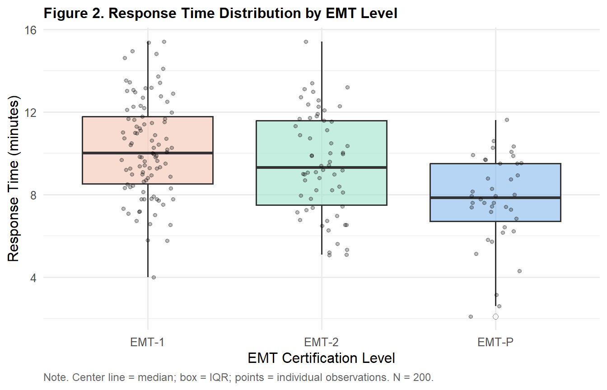
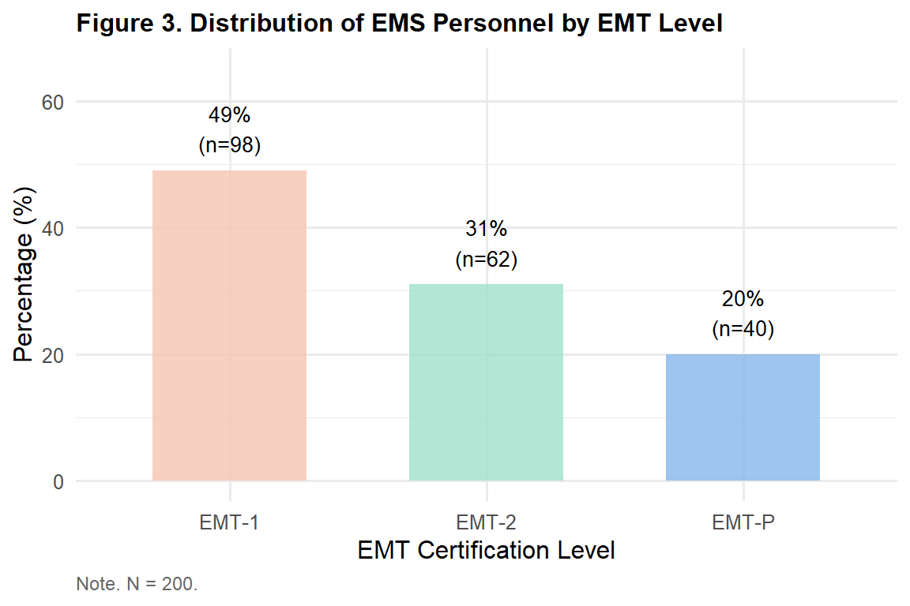

library(tidyverse)
library(gt)
library(psych)
ems <- read.csv("data/ems_main.csv",
stringsAsFactors = FALSE)
ems$gender <- factor(ems$gender,
levels = c("男", "女"))
ems$level <- factor(ems$level,
levels = c("EMT-1", "EMT-2", "EMT-P"))
ems$district <- factor(ems$district,
levels = c("北部", "中部", "南部", "東部"))
ems$shift <- factor(ems$shift,
levels = c("日班為主", "夜班為主", "輪班"))Topic 2：Descriptive Statistics & Epidemiological Measures
Central Tendency, Dispersion, Epidemiological Rates, R Implementation
Learning Objectives
- Understand central tendency and dispersion in descriptive statistics
- Select the appropriate measure: mean vs median
- Calculate and interpret epidemiological measures (prevalence, RR, OR)
- Perform complete descriptive statistics on
ems_main.csvusing R
Statistical Method Map (This Topic)
| X (Predictor) | Y (Outcome) | Method |
|---|---|---|
| None (univariate) | Continuous | Mean, SD, Median, IQR |
| None (univariate) | Categorical | Frequency, %, rates |
Note
Descriptive statistics do not distinguish X from Y — we are simply describing the distribution of a single variable. The X-Y framework begins in Topic 5 when we examine relationships between two variables.
I. Statistical Theory
1.1 Why Do We Need Descriptive Statistics?
ems_main.csv contains 200 observations and 27 variables. You cannot read through every individual value — you need to compress these 200 numbers into a small set of meaningful summaries.
Descriptive statistics answer two fundamental questions:
- Where is the data centered? → Central tendency (mean, median)
- How spread out is the data? → Dispersion (SD, IQR)
1.2 Central Tendency
Mean
\[\bar{x} = \frac{\sum_{i=1}^{n} x_i}{n}\]
Critical weakness: Highly sensitive to extreme values. A single unusually long response time can pull the mean substantially upward.
Median
Arrange all values from smallest to largest and take the middle value.
Advantage: Not affected by extreme values — reflects the “typical” case.
Important
Decision rule:
- Histogram approximates a bell shape → Normal → Report Mean ± SD
- Histogram is skewed or has outliers → Report Median (IQR)
- In medical research, response times and length of stay are typically skewed → Median is usually preferred
1.3 Dispersion
Standard Deviation (SD)
\[s = \sqrt{\frac{\sum_{i=1}^{n}(x_i - \bar{x})^2}{n-1}}\]
The average distance of each observation from the mean. The denominator uses n-1 (Bessel’s correction) to produce an unbiased estimate.
Interquartile Range (IQR)
\[IQR = Q_3 - Q_1\]
The spread of the middle 50% of data. Used together with the median when data are skewed.
1.4 Epidemiological Measures
Prevalence
\[P = \frac{\text{Number of cases}}{\text{Population at risk}}\]
Cross-sectional concept: proportion currently having a condition.
Relative Risk (RR)
\[RR = \frac{\text{Incidence rate in exposed group}}{\text{Incidence rate in unexposed group}}\]
Used in cohort studies. RR > 1 = exposure increases risk.
Odds Ratio (OR)
\[OR = \frac{ad}{bc}\]
Used in case-control studies and logistic regression (Topic 10).
Tip
RR vs OR: When prevalence < 10%, OR ≈ RR. At higher prevalence, OR overestimates RR.
II. R Implementation
Load packages and data
Table 1. Descriptive Statistics for Continuous Variables
desc_raw <- describe(
ems |> dplyr::select(age, years, monthly_cases,
bmi, sbp, sleep_hrs,
stress_vas, mbi_ee, response_time)
)
data.frame(
Variable = c("Age (years)", "Years of service",
"Monthly calls", "BMI (kg/m²)",
"Systolic BP (mmHg)", "Sleep hours (h)",
"Stress VAS", "MBI-EE",
"Response time (min)"),
n = as.integer(desc_raw$n),
Mean = round(desc_raw$mean, 2),
SD = round(desc_raw$sd, 2),
Median = round(desc_raw$median, 2),
Min = round(desc_raw$min, 2),
Max = round(desc_raw$max, 2),
Skewness = round(desc_raw$skew, 2)
) |>
gt() |>
tab_header(
title = "Table 1. Descriptive Statistics for Key Continuous Variables"
) |>
tab_spanner(label = "Central Tendency",
columns = c(Mean, Median)) |>
tab_spanner(label = "Dispersion",
columns = c(SD, Min, Max)) |>
tab_source_note(
source_note = "Note. N = 200. |Skewness| > 1 indicates notable skew."
) |>
cols_align(align = "center", columns = -Variable) |>
cols_align(align = "left", columns = Variable) |>
tab_style(
style = cell_text(weight = "bold"),
locations = cells_column_labels()
) |>
tab_style(
style = cell_text(weight = "bold"),
locations = cells_column_spanners()
) |>
tab_options(
table.border.top.style = "hidden",
heading.border.bottom.style = "solid",
column_labels.border.top.style = "solid",
column_labels.border.bottom.style = "solid",
table.border.bottom.style = "solid",
table.font.size = px(13),
heading.title.font.size = px(14),
heading.align = "left"
)| Table 1. Descriptive Statistics for Key Continuous Variables | |||||||
| Variable | n |
Central Tendency
|
Dispersion
|
Skewness | |||
|---|---|---|---|---|---|---|---|
| Mean | Median | SD | Min | Max | |||
| Age (years) | 200 | 33.33 | 34.0 | 6.94 | 22.0 | 58.0 | 0.33 |
| Years of service | 200 | 7.21 | 7.0 | 4.62 | 1.0 | 22.0 | 0.81 |
| Monthly calls | 200 | 48.12 | 48.0 | 10.79 | 24.0 | 76.0 | 0.01 |
| BMI (kg/m²) | 200 | 24.74 | 24.8 | 3.15 | 17.0 | 33.3 | 0.02 |
| Systolic BP (mmHg) | 200 | 117.54 | 117.0 | 13.01 | 90.0 | 148.0 | -0.02 |
| Sleep hours (h) | 200 | 6.05 | 6.1 | 1.02 | 3.0 | 9.0 | -0.10 |
| Stress VAS | 200 | 5.34 | 5.3 | 1.83 | 0.0 | 10.0 | -0.09 |
| MBI-EE | 200 | 3.02 | 3.0 | 1.12 | 0.2 | 6.0 | -0.14 |
| Response time (min) | 200 | 9.48 | 9.4 | 2.52 | 2.1 | 15.4 | -0.04 |
| Note. N = 200. |Skewness| > 1 indicates notable skew. | |||||||
Table 2. Response Time by EMT Level
ems |>
dplyr::group_by(level) |>
dplyr::summarise(
n = n(),
Mean = round(mean(response_time), 2),
SD = round(sd(response_time), 2),
Median = round(median(response_time), 2),
Q1 = round(quantile(response_time, 0.25), 2),
Q3 = round(quantile(response_time, 0.75), 2),
.groups = "drop"
) |>
dplyr::rename(Level = level) |>
gt() |>
tab_header(
title = "Table 2. Response Time by EMT Certification Level"
) |>
tab_spanner(label = "Central Tendency",
columns = c(Mean, Median)) |>
tab_spanner(label = "Quartiles",
columns = c(Q1, Q3)) |>
tab_source_note(
source_note = "Note. Units: minutes. Q1 = 25th percentile; Q3 = 75th percentile."
) |>
cols_align(align = "center", columns = -Level) |>
cols_align(align = "left", columns = Level) |>
tab_style(
style = cell_text(weight = "bold"),
locations = cells_column_labels()
) |>
tab_style(
style = cell_text(weight = "bold"),
locations = cells_column_spanners()
) |>
tab_options(
table.border.top.style = "hidden",
heading.border.bottom.style = "solid",
column_labels.border.top.style = "solid",
column_labels.border.bottom.style = "solid",
table.border.bottom.style = "solid",
table.font.size = px(13),
heading.title.font.size = px(14),
heading.align = "left"
)| Table 2. Response Time by EMT Certification Level | ||||||
| Level | n |
Central Tendency
|
SD |
Quartiles
|
||
|---|---|---|---|---|---|---|
| Mean | Median | Q1 | Q3 | |||
| EMT-1 | 98 | 10.21 | 10.00 | 2.35 | 8.53 | 11.78 |
| EMT-2 | 62 | 9.47 | 9.30 | 2.44 | 7.50 | 11.57 |
| EMT-P | 40 | 7.72 | 7.85 | 2.19 | 6.70 | 9.50 |
| Note. Units: minutes. Q1 = 25th percentile; Q3 = 75th percentile. | ||||||
Table 3. EMT Level Distribution
ems |>
dplyr::count(level) |>
dplyr::mutate(
Percentage = round(n / sum(n) * 100, 1),
Cumulative = round(cumsum(Percentage), 1)
) |>
dplyr::rename(Level = level) |>
gt() |>
tab_header(
title = "Table 3. Distribution of EMT Certification Levels"
) |>
tab_source_note(
source_note = "Note. N = 200."
) |>
cols_label(
Level = "Level",
n = "n",
Percentage = "Percentage (%)",
Cumulative = "Cumulative (%)"
) |>
cols_align(align = "center",
columns = c(n, Percentage, Cumulative)) |>
cols_align(align = "left", columns = Level) |>
tab_style(
style = cell_text(weight = "bold"),
locations = cells_column_labels()
) |>
tab_options(
table.border.top.style = "hidden",
heading.border.bottom.style = "solid",
column_labels.border.top.style = "solid",
column_labels.border.bottom.style = "solid",
table.border.bottom.style = "solid",
table.font.size = px(13),
heading.title.font.size = px(14),
heading.align = "left"
)| Table 3. Distribution of EMT Certification Levels | |||
| Level | n | Percentage (%) | Cumulative (%) |
|---|---|---|---|
| EMT-1 | 98 | 49 | 49 |
| EMT-2 | 62 | 31 | 80 |
| EMT-P | 40 | 20 | 100 |
| Note. N = 200. | |||
Figure 1. Distribution of Response Time
ggplot(ems, aes(x = response_time)) +
geom_histogram(bins = 20,
fill = "#85B7EB",
color = "white") +
geom_vline(xintercept = mean(ems$response_time),
color = "#D85A30",
linetype = "dashed",
linewidth = 0.9) +
geom_vline(xintercept = median(ems$response_time),
color = "#1D9E75",
linetype = "dashed",
linewidth = 0.9) +
annotate("text",
x = mean(ems$response_time) + 1.5,
y = 26,
label = paste0("Mean = ",
round(mean(ems$response_time), 1)),
color = "#D85A30", size = 3.5) +
annotate("text",
x = median(ems$response_time) - 1.5,
y = 23,
label = paste0("Median = ",
round(median(ems$response_time), 1)),
color = "#1D9E75", size = 3.5) +
labs(
title = "Figure 1. Distribution of EMS On-Scene Response Time",
x = "Response Time (minutes)",
y = "Frequency (n)",
caption = "Note. Orange dashed line = mean; green dashed line = median. N = 200."
) +
theme_minimal(base_size = 12) +
theme(
plot.title = element_text(face = "bold", size = 12),
plot.caption = element_text(hjust = 0, size = 9,
color = "gray40")
)
Figure 2. Response Time by EMT Level
ggplot(ems, aes(x = level, y = response_time,
fill = level)) +
geom_boxplot(alpha = 0.6,
outlier.shape = 21,
outlier.fill = "white",
outlier.size = 2) +
geom_jitter(width = 0.15, alpha = 0.25, size = 1.2) +
scale_fill_manual(
values = c("EMT-1" = "#F5C4B3",
"EMT-2" = "#9FE1CB",
"EMT-P" = "#85B7EB")
) +
labs(
title = "Figure 2. Response Time Distribution by EMT Level",
x = "EMT Certification Level",
y = "Response Time (minutes)",
caption = "Note. Center line = median; box = IQR; points = individual observations. N = 200."
) +
theme_minimal(base_size = 12) +
theme(
plot.title = element_text(face = "bold", size = 12),
legend.position = "none",
plot.caption = element_text(hjust = 0, size = 9,
color = "gray40")
)
Figure 3. EMT Level Distribution
ems |>
dplyr::count(level) |>
dplyr::mutate(pct = round(n / sum(n) * 100, 1)) |>
ggplot(aes(x = level, y = pct, fill = level)) +
geom_col(alpha = 0.8, width = 0.6) +
geom_text(
aes(label = paste0(pct, "%\n(n=", n, ")")),
vjust = -0.4, size = 3.5
) +
scale_fill_manual(
values = c("EMT-1" = "#F5C4B3",
"EMT-2" = "#9FE1CB",
"EMT-P" = "#85B7EB")
) +
scale_y_continuous(limits = c(0, 65)) +
labs(
title = "Figure 3. Distribution of EMS Personnel by EMT Level",
x = "EMT Certification Level",
y = "Percentage (%)",
caption = "Note. N = 200."
) +
theme_minimal(base_size = 12) +
theme(
plot.title = element_text(face = "bold", size = 12),
legend.position = "none",
plot.caption = element_text(hjust = 0, size = 9,
color = "gray40")
)
Table 4. Epidemiological Measures — Occupational Injury
n_injury <- sum(ems$occ_injury == 1, na.rm = TRUE)
n_total <- nrow(ems)
prevalence <- n_injury / n_total
ems_rr <- ems |>
dplyr::mutate(
night = ifelse(shift == "夜班為主",
"Night shift", "Non-night shift")
)
tbl_2x2 <- table(ems_rr$night, ems_rr$occ_injury)
rate_night <- tbl_2x2["Night shift", "1"] /
rowSums(tbl_2x2)["Night shift"]
rate_non <- tbl_2x2["Non-night shift", "1"] /
rowSums(tbl_2x2)["Non-night shift"]
RR <- rate_night / rate_non
data.frame(
Measure = c("Occupational injury prevalence",
"Night-shift injury rate",
"Non-night-shift injury rate",
"Relative Risk (RR)"),
Value = c(
paste0(round(prevalence * 100, 1),
"% (", n_injury, "/", n_total, ")"),
paste0(round(rate_night * 100, 1), "%"),
paste0(round(rate_non * 100, 1), "%"),
as.character(round(RR, 2))
),
Interpretation = c(
"Proportion with occupational injury in the past year",
"Among night-shift workers",
"Among day or rotating shift workers",
"Risk multiplier: night shift vs non-night shift"
)
) |>
gt() |>
tab_header(
title = "Table 4. Epidemiological Measures — Occupational Injury"
) |>
tab_source_note(
source_note = "Note. RR = Relative Risk. RR > 1 indicates elevated risk. N = 200."
) |>
cols_align(align = "left", columns = everything()) |>
tab_style(
style = cell_text(weight = "bold"),
locations = cells_column_labels()
) |>
tab_options(
table.border.top.style = "hidden",
heading.border.bottom.style = "solid",
column_labels.border.top.style = "solid",
column_labels.border.bottom.style = "solid",
table.border.bottom.style = "solid",
table.font.size = px(13),
heading.title.font.size = px(14),
heading.align = "left"
)| Table 4. Epidemiological Measures — Occupational Injury | ||
| Measure | Value | Interpretation |
|---|---|---|
| Occupational injury prevalence | 20.5% (41/200) | Proportion with occupational injury in the past year |
| Night-shift injury rate | 25% | Among night-shift workers |
| Non-night-shift injury rate | 18.9% | Among day or rotating shift workers |
| Relative Risk (RR) | 1.32 | Risk multiplier: night shift vs non-night shift |
| Note. RR = Relative Risk. RR > 1 indicates elevated risk. N = 200. | ||
III. Reporting Results (APA Format)
Continuous variable (normal distribution):
The mean age of EMS personnel was 34.2 years (SD = 6.8). Mean on-scene response time was 9.3 minutes (SD = 2.5).
Continuous variable (skewed):
The median monthly call volume was 48 calls (IQR: 41–55), with a slight positive skew.
Categorical variable:
EMT-1 accounted for 49.0% of participants (n = 98), followed by EMT-2 (31.0%, n = 62) and EMT-P (20.0%, n = 40).
Epidemiological measure:
The one-year prevalence of occupational injury was 22.0% (44/200). Night-shift workers had 1.8 times the occupational injury rate of non-night-shift workers (RR = 1.80), suggesting that night-shift work may increase injury risk.
Weekly Assignment
Q1 Calculate the mean, median, SD, and IQR for stress_vas. Create an APA-format gt table and plot a histogram. Based on the distribution shape, justify whether mean or median is more appropriate.
Q2 Use group_by() + summarise() to compute descriptive statistics for response_time by district. Present results in an APA-format gt table with a boxplot.
Q3 Tabulate frequency and percentage for each EMT level. Create an APA-format gt table and a labeled bar chart.
Q4 Calculate the prevalence of occ_injury and compare the injury rate between “Rotating” and “Day” shift workers. Compute RR and report in APA format.
Q5 Reflection: Compare the mean and median of mbi_ee. Are they substantially different? What does this tell you about the distribution of this variable?